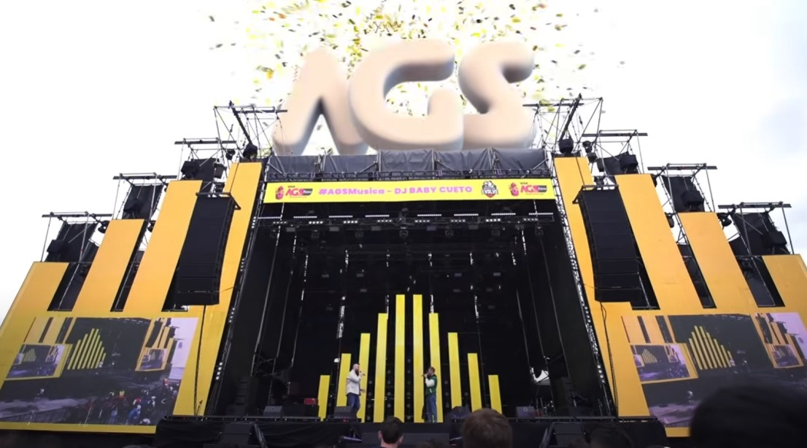
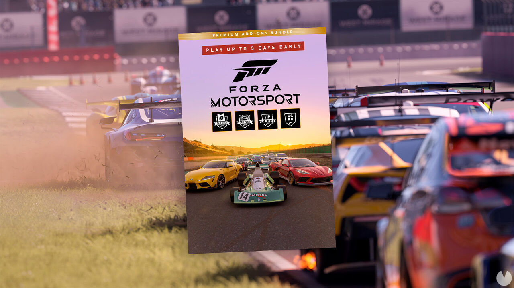

Commandos: Origins llegará a Game Pass de lanzamiento en 2024
Una nueva entrega de una legendaria saga española llegará el año que viene y lo hará directamente y sin coste adicional para los suscriptores de Game Pass
“Alarm! La legendaria franquicia táctica en tiempo real regresa. Commandos: Origins te lleva de vuelta a las primeras misiones de esta infame
unidad especial de la Segunda Guerra Mundial.
Hazte con el control del boina verte, el zapador y compañía,
descubre cómo se conocieron originalmente y embárcate en más de diez misiones desde el estéril Ártico hasta el desierto africano”.
Nuevo Himno de los Worlds 2023 de League of Legends
¿Ya escuchaste el nuevo himno del mundial de League of Legends 2023? El grupo musical de Kpop "New Jeans" fueron las convocadas para la realización de este nuevo tema.
Los 5 mejores videojuegos que se lanzaron en 2023: clásicos que resucitan y franquicias poderosas
En este artículo, exploramos los juegos que están marcando tendencia este año y cuáles deberías jugar. ¿Cuál es tu favorito?
The Legend of Zelda: Tears of the Kingdom, un tanque de Nintendo entre los mejores juegos de 2023
Diablo IV, demorado pero exitoso
Resident Evil IV, una remake que triunfa en 2023
Street Fighter 6, luchas cara a cara para los gamers nostálgicos
AGS 2023: se viene el evento gamer más importante de Argentina

El fin de semana del 13, 14, 15 y 16 de octubre se llevará a cabo la novena edición de Argentina Game Show Flow,
la celebración más importante de América para el mundo del gaming, el streaming y los eSports. Nuevamente con sede en el
centro de convenciones de Costa Salguero, en Ciudad de Buenos Aires.
Silent Hill: Ascension llega por sorpresa para Halloween, ¿cuándo sale y en qué plataformas?
El extraño juego de la saga de terror de Konami pone fecha a su lanzamiento.
De entre todos los juegos anunciados de Silent Hill, probablemente el más extraño de todos sea
Silent Hill: Ascension, cuyo primer tráiler nos recordó a una partida de Until Dawn. Se anunció hace tiempo
pero apenas se han compartido detalles sobre él, más allá de que es una experiencia de corte cinematográfico
en la que las decisiones del jugador son lo más importante. Pero ahora sabemos algo clave: su fecha de
lanzamiento —al menos en móviles Android—, ya que se ha fijado para el 31 de octubre de 2023 (1 de noviembre en España).
Ya puedes jugar a Forza Motorsport en acceso anticipado si tienes o compras la Premium Edition

El acceso anticipado de Forza Motorsport ya está disponible en Xbox Series X/S y PC. Si tienes Xbox Game Pass puedes
actualizar a la Premium Edition y jugarlo ya.
Aunque la fecha de lanzamiento oficial de Forza Motorsport es el 10 de octubre, los jugadores que hayan comprado
la Premium Edition ya pueden disfrutar de este simulador de carreras en Xbox Series X/S y PC: esta edición incluye
cinco días de acceso anticipado, así que a partir de hoy mismo ya se puede jugar al nuevo Forza.